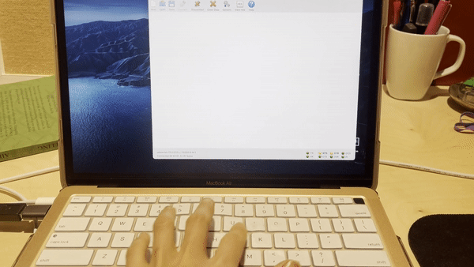
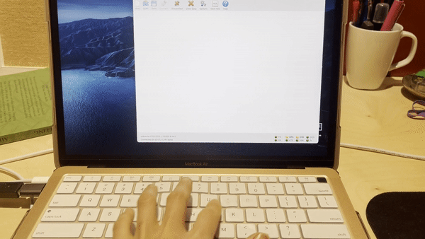

A8: Serial communication or the Blinking Orange Light Saga
Update! Still didn't achieve serial connection :'( I made a new board and successfully programmed it (or at least the program was successfully uploaded) but something's still not right. Troubleshooting ongoing! Read about the adventures of the new boad at the end of the post.
TL;DR my board had trouble connecting to the programmer and it took me 7 hours to figure it out. Complete saga below.
Board design


We all used Nadya's board design as a starting point. I added an LED for my output. A novelty for this board was that it was double sided; we all used the other side of the board to connect the GND.
Milling and SM soldering


The one part of the assignment when I felt truly confident.
Serial communication
This is when the trouble began. At first, when I connected my board to the computer with the serial cable I got a green light from the programmer, which always feels good. I then set the fuses of the at44 using avrdude (thanks Blair for helping me with the install!). That worked well. I made sure the board settings in the Arduino IDE were right (board, processor, clock, programmer) and uploaded Nadya's echo sketch. I got the following error:

The first thing I did was check all my connections, especially between the programmer and the at44. Everything looked good. I plugged in the programmer in reverse and got the same message. I then went online, looked for possible causes.

One of them was that something on the SPI bus might interfere with the communication with the chip. I felt that was unlikely, but perhaps this is explains why we need to disconnect the programmer once we've uploaded our code if we want serial to work (as Blair discovered).
Another theory was that I wasn't getting good power. My programmer was also blnking orange constantly at that point, which corroborated the power issue, per Atmel's AVRISP mkII documentation.

So maybe it was my connectors that weren't making good contact. Back to the soldering station!

The intervention definitely helped because when I plugged in the programmer again the light went green! Hooray! Tiny progress.

And while the sketch still wouldn't upload, AVR was no longer complaining.


But still, something was up with the connection. Perhaps even the clock?. I messed with that a bit using avrdude, with no success. I also added tape to my board and strenghtened a few more connections, in case that might helped with power supply.


Ultimately, hours later, I found this really great AVR tutorial. I think my problem is that my board isn't properly connected to the chip.

Next steps


So tomorrow, I'll mill another board while I mill the one for my final project and try again with thicker traces and more clearance to make sure I have solid connections.
Update


I made one last trip to campus last Saturday to make a new board and program it. The lab was all clean, including the soldering station and even the soldering iron tip! Soooo shiny.


The new circuit looked good and I could upload the echo sketch successfully. Hooray! However, nothing I entered in the Arduino serial window was returned. I uploaded Blair's sketch too to see if it would make my LED blink but again nothing happened. I got coolterm to help me debug. It seems to be sending data to the microcontroller but for some reason, the microcontroller doesn't echo back.
 

Troubleshooting ongoing! I'll update when I get it to work.